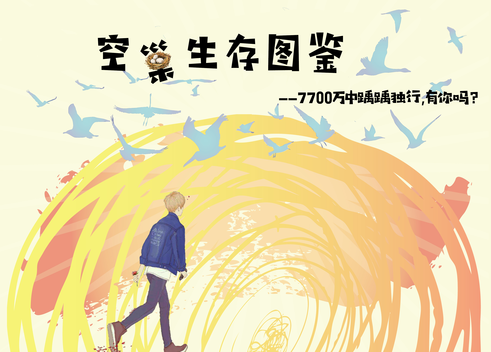
空巢青年，你是谁？
少年气尚未褪尽，北上广深是我们筑梦的目的地
30平出租屋独自生活，快餐泡面永远不离不弃
总喜欢在公司待到很晚，回家路上见过凌晨三点的城市
“我一个人吃饭旅行到处走走停停，也一个人看书写信自己对话谈心”
根据国家统计局的历年年鉴数据，2015年全国一人户占家庭总户数的比重迅速上升， 2017年更是高达15.7%。《全国1%人口抽样调查资料（2015）》的数据显示， 青年群体约占家庭总户数的3%， 这也就意味着每100户家庭中有3户是独居青年户。据民政部统计， 目前中国有超过2亿单身成年人，其中包括超过7700万独居成年人。 有网友这样描述独居青年：“一人独居，两眼惺忪，三餐外卖，四季网购，五谷不分，而孤独的十级是一个人做手术。”
数据来源：淘宝2017年《中国空巢青年图鉴》
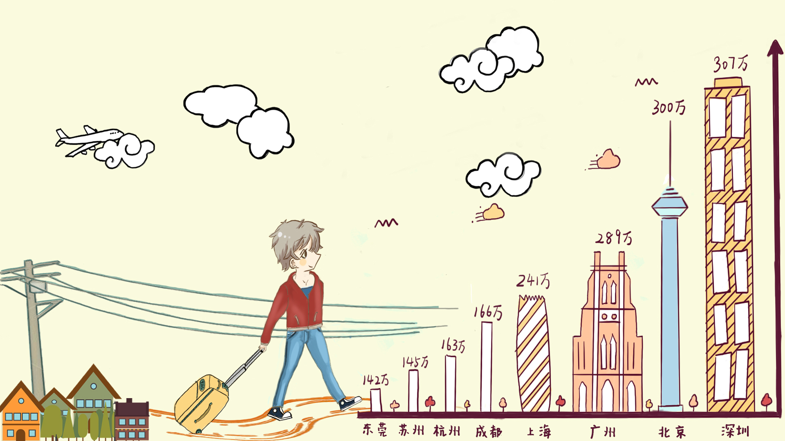
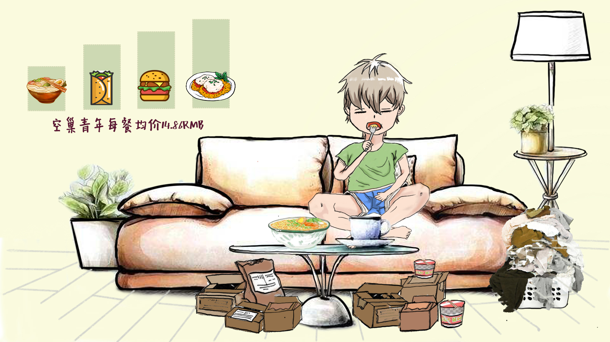
根据专项调查《空巢又空心——“空巢青年”的生存状态分析与对策》——聂伟、风笑天的数据，我们发现......
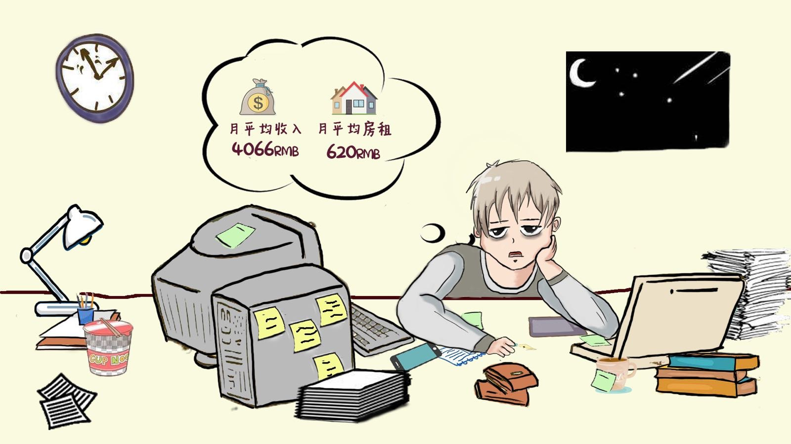
生在秋冬，可能是巧合
根据2014 年国家卫计委开展的“流动人口心理健康与社会融合”专项调查，我们空巢青年的定义—— “20 到30 岁，背井离乡到城市打拼的租房单身年轻人”。或许是秋冬的阴郁冷峻赋予了我们特有的孤独气质， 空巢青年大多出生在九、十、十一和十二月份，万物归寂之际，我们悄然而至。戏谑地说，难道是降生时的寒冷促使了成年的空巢？
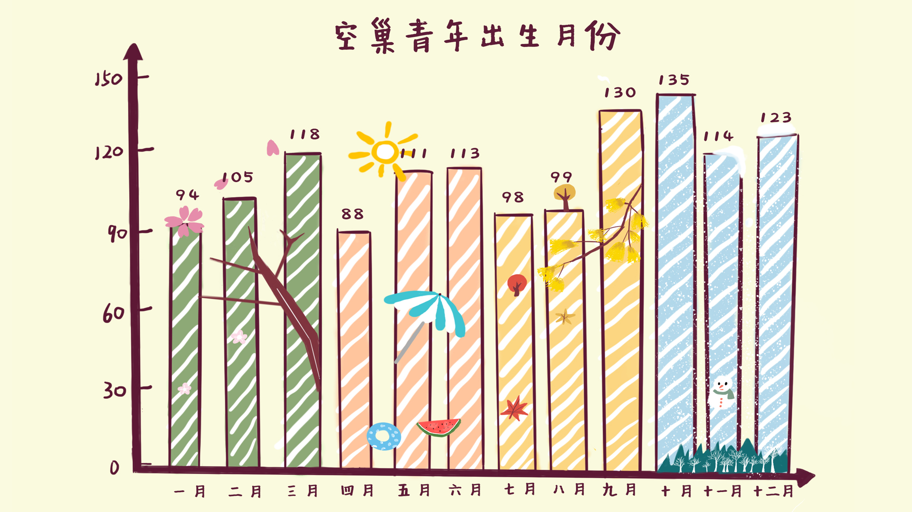
不想买房，但渴望家人陪伴
“各安其居而乐其业”，对于中国人而言，买房是人生中的头等大事。房子维系着家与亲情，它给予我们的安全感可能就是我们留在这座城市里最大的动力。 但数据显示，相较于非空巢青年，空巢青年的购房意愿远远低于非空巢青年。
当引入“未来1-3年内，是否打算把家庭成员带到本地”时，无关空巢青年的职业、收入乃至是否有房，57%的空巢青年表示“想带一部分家庭成员来本地”，27%的空巢青年表示不想将家庭成员带到本地。
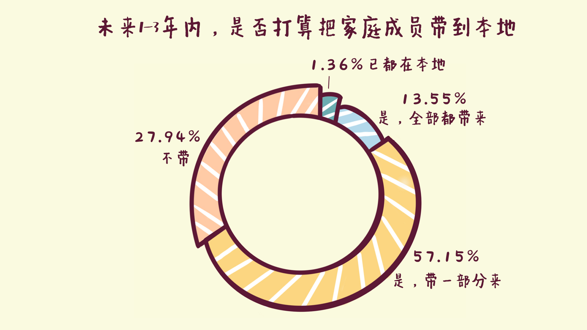
空巢男女
我在打游戏看球睡到昏天地暗，你在刷淘宝追剧敷面膜熬夜。
同样身为空巢青年，性别对他们有什么影响？男空巢与女空巢又有什么区别呢？
空巢女青年比例提升，且拥有更高学历
空巢男青年的比例为 53.5%，比非空巢男青年低约 4 个百分点，空巢女青年的比例为 46.5%，比普通女青年比例高约 4 个百分点。这说明在空巢青年的性别结构中，女性的占比要比平常高。并且，空巢女青年的平均学历也高于空巢男青年，新时代下的她们更加独立也更加努力。
空巢男青年更加包容，但归属感更低
在心理方面，空巢男青年们除了在"家乡的生活习惯"和"本地话的掌握程度"两个方面外，其他对家乡和本地的认同程度，如“认同本地对社会一些问题的看法”、“认同本地的衣着打扮”等均高于女性空巢青年，这意味着空巢男青年们对地域文化差异有着更高的包容度和接受度。
即使他们的心理认同程度更高，但在实际生活中，空巢男青年自我感觉的融入程度却远低于空巢女青年，这意味着他们在生活中并未感受到预期的归属感，他们对自己的“格格不入”更加敏感。

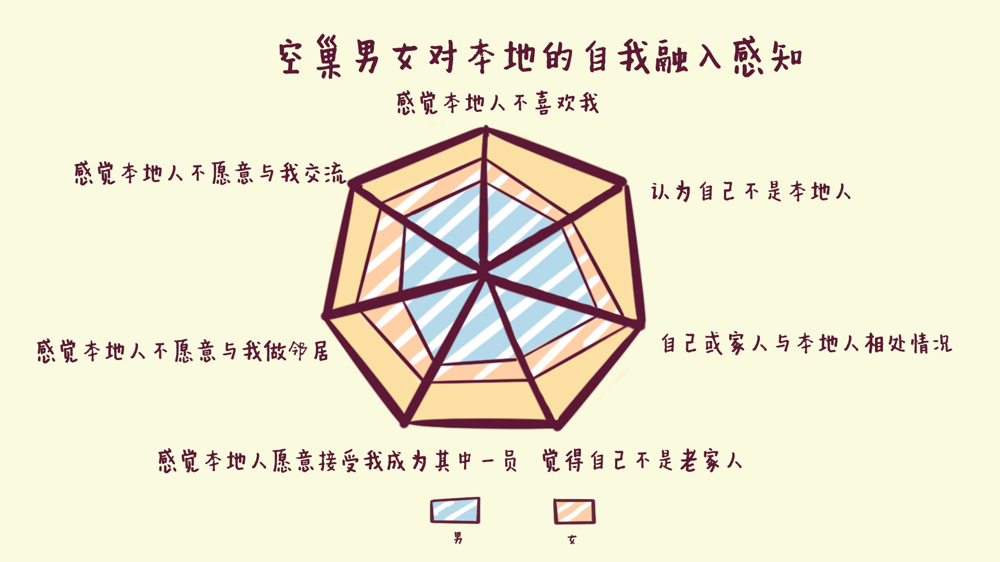
空巢青年VS.非空巢青年
你我同是青年，又会相差几许？
普通青年收入更高，但也更加“忙碌”
满怀一腔热血背井离乡来到陌生的城市，想要有好的生活也想出人头地。但事实上，空巢青年的月平均收入只有3579元，明显低于非空巢青年的平均月收入4405元，两者相差近千元。
但是，有多少付出就有多少回报。普通青年不论是工作时长还是工作天数都略高于空巢青年。看来，普通青年要更加“工作狂”一些，这与我们的原先印象不太一样。
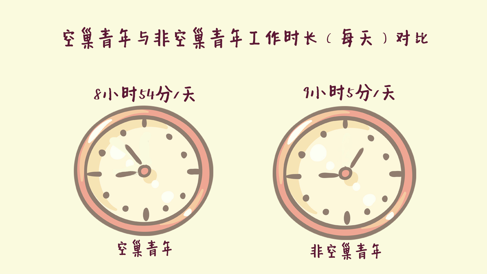
空巢青年学历高，却难得“体面”
为了探究造成空巢青年收入低的原因，我们加入了受教育程度以及工作情况两个纬度。众所周知，“一份好的学历是一份好工作的敲门砖”， 为此，中国人在学术的海洋中奋斗多年。但是“好学历=敲门砖”这件事对于空巢青年来说可能并不适用。
就职高级公务员和普通公务员等较“体面”的工作时，空巢青年教育水平明显高于非空巢青年。因此，在追求同一份对大众而言“体面”的职业时，空巢青年需要具备更加优秀的学历，才有可能在与普通青年的职业竞赛中取得胜利。反之，在装修、保洁等“劳动力型”职业中，空巢青年的受教育水平则相对较低。
即使受教育程度的整体水平高于普通青年，但是我们在比较了空巢青年与普通青年受教育程度的方差之后，发现空巢青年教育程度两极分化更为严重，普通青年的基础教育水平更高，这可能是由于大城市中的教育资源更加丰富且均等。
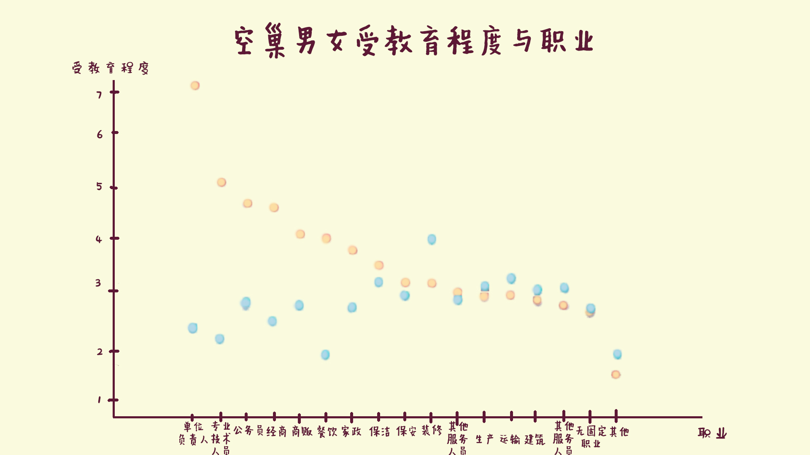
非空巢青年身体健康感知更糟糕
健康感知是什么？
当你看着镜子里憔悴的自己，摸着日渐稀少的头发；当你敲打僵硬的肩膀，活动着“嘎啦“作响的膝盖；当你熬着一个又一个夜，感受着胸膛里蹦得飞快的心脏。这些都是健康感知。 健康感知就是对自己身体状态、亚健康状态的自评。
非空巢青年和空巢青年对于自身的健康感知均不理想，但是非空巢青年的健康感知低于空巢青年。
空巢青年感知负面情绪的时间更长
非空巢青年和空巢青年都偶尔处在负面情绪中，且时间相近。但是无论是紧张、无力、不安或烦躁，甚至是更加严重的负面情绪——绝望，空巢青年处于负面情绪的时间比非空巢青年的更长。
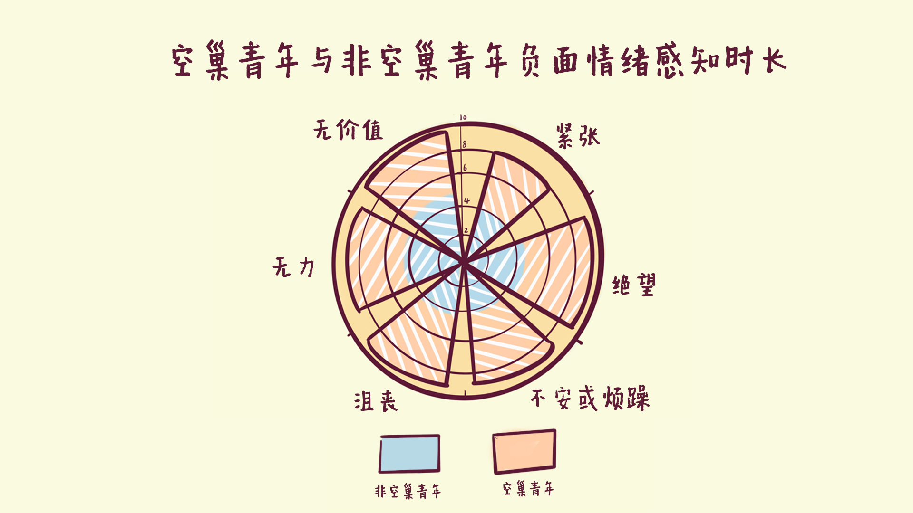
你我，其实一样惨
你有想象过未来住在哪里吗？是时尚都市还是田野乡村？是高档小区还是城中村？ 独自一人来到陌生的城市，看着不友好的房价，住房成为了最大的问题。当你在早班的路上昏昏欲睡；当你天天花费一小时以上的时间往返于出租屋与公司；当你幻想着“要是有个自己的家该多好。”
但事实上，普通青年和空巢青年的居住情况都不理想，城中村或棚户区以及未经改造的老城区居住占比均为最高。不过，住在工矿企业社区的空巢青年略多于普通青年。
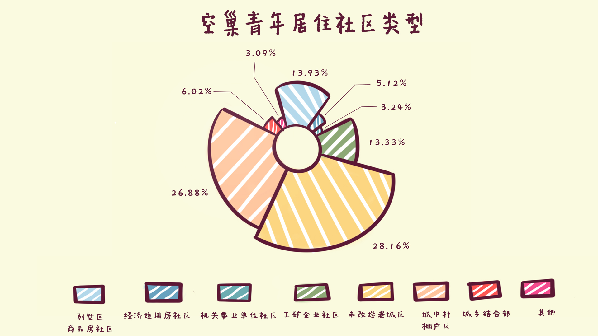
社会支持
社会支持是个体从社会联系中获得的资源，它能使个体感受到被关爱、获得归属感，有效减少生活中的消极影响。政府政策作为一项强有力的社会支持，能有效地惠及空巢青年这个群体。我们以人才招引政策为例，统计了24个省会城市的政策数据，列举出各大城市在人才落户、租住房补贴等方面的优惠，这些政策将有利于空巢青年在城市中立足发展，更加体面地在城市中生活。

结语
空巢青年是一个客观存在且数量庞大的“隐性“群体，它的出现与中国经济发展进程密切相关，是中国城市化过程中人口迁移、地区资源不均衡等因素综合作用的结果。他们怀揣着梦想，只身一人来到陌生的土地，也曾仰望星空，却囿于日益沉重的生存成本和难以融入的失落与孤独。他们脚踏实地，负重前行，为城市建设默默付出，应该被人们“看见”，他们的生存困境也应该被社会和政府重视。孤独并不可怕，勇敢前行，这支"朝气蓬勃“的青年队伍定会在未来的社会发展蓝图中留下浓墨重彩的一笔。